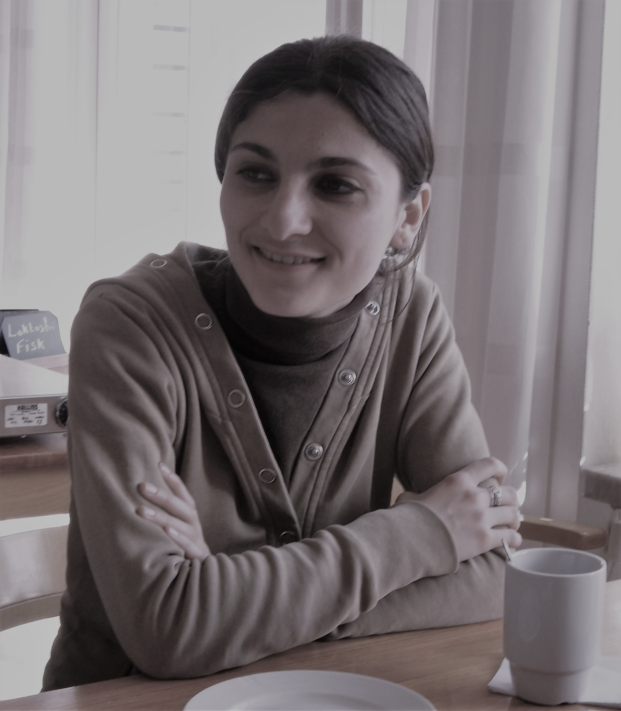

Despre mine

Ecaterina Ștefan
-
INFORMAȚII PERSONALE
-
- Data nașterii: 10.06.1991
- Adresa: Constanța,
Romania
- Naționalitate: română
-
EDUCAŢIE
-
STUDII PREUNIVERSITARE ȘI UNIVERSITARE nivel EQF 6-7
septembrie 2011 – septembrie 2016
- Universitatea „Dunarea de Jos” - Facultatea de Medicină și Farmacie, specializarea Farmacie.
Absolventă cu nota finală la studii și licență: 9,68.
septembrie 2007 - iunie 2011
- Colegiul Național de Comerț al ASEM
- Absolventă cu nota finală la studii și examen de stat: 10.
-
CURSURI IT
martie 2023 – prezent
- Learn PHP
Sunt antrenată momentan în cursul ”Learn PHP” în urma căruia voi obține competențe ”Fullstack Developer”,
cunoștințe avansate de înțelegere/lucru practic cu PHP/Laravel și Certificarea Internațională Zend Certified Engineer.
decembrie 2022 - ianuarie 2023
- ”Google UX Design Certificate”
În cadrul acestui curs certificat internațional am absolvit șapte cursuri, dezvoltate de Google,
care includ evaluări practice, bazate pe practică și sunt concepute pentru a ne pregăti pentru
roluri de nivel introductiv în designul UX.
Pot completa procesul de design de la început până la sfârșit: empatizarea cu utilizatorii, definirea pain-points-urilor,
venind cu idei pentru soluții de proiectare, creare wireframes și prototipuri și testarea design-urilor pentru a obține feedback.
septembrie 2022 - decembrie 2022
- Front-End-Development SkillBrain
Cu ajutorul acestui curs mi-am aprofundat cunoștințele în HTML, CSS, JavaScript și am exersat React.
iunie - septembrie 2022
- ”Google IT Support Professional Certificate”, COURSERA ONLINE COURSE
Program de asistență IT care acoperă depanarea, serviciul pentru clienți, rețelele, sistemele de operare, administrarea sistemului și securitatea.
mai - august 2022
- ”The Complete JavaScript Course 2022: From Zero to Expert!”, by Jonas Schmedtmann, UDEMY ONLINE COURSE
Am învățat și am practicat JavaScript, inclusiv în cadrul unor proiecte practice realizate la un nivel avansat.
mai - august 2022
- ”Fullstack Web Developer – Build a Twitter Clone” (accredited CDP, Great Britain)
Am învățat GIT. Am construit un website simplu utilizând React.
iunie 2022
- ”HTML5 and CSS3 - PIRPLE”, ONLINE COURSE
Mi-am consolidat cunoștințele în HTML5 și CSS
februarie-mai 2022
- ”Build Responsive Real-World Websites with HTML and CSS”, by Jonas Schmedtmann
Am aprofundat și am aplicat cunoștințele mele de HTML și CSS
decembrie 2021 - ianuarie 2022
- Responsive Web Design - freeCodeCamp
În cadrul celor aproximativ 300h dedicate învățării HTML, CSS și Responsive Web Design am căpătat primele mele cunoștințe legate de bazele programării.
-
EXPERIENȚĂ DE MUNCĂ
-
2016-2021
- Farmacist în cadrul lanțului farmaceutic ”Catena”, Constanta
M-am dedicat sănătății pacientului.
-
PROFILE SOCIALE
-
-
APTITUDINI
-
- JavaScript
- HTML și CSS
- Basic Git
- Wireframing
- Adobe XD
- Figma
- Research
-
CE FAC ÎN TIMPUL LIBER
-
- Lectură, free writing, înot
(mamă a doi copii)
-
ALTE DISTINCȚII
-
- Patru volume de poezie
publicate la diverse edituri.
- Colaborare pe termen lung cu reviste literare; prezență în numeroase antologii colective.
- Premiul Național pentru Tineret în domeniul Literaturii (2012).